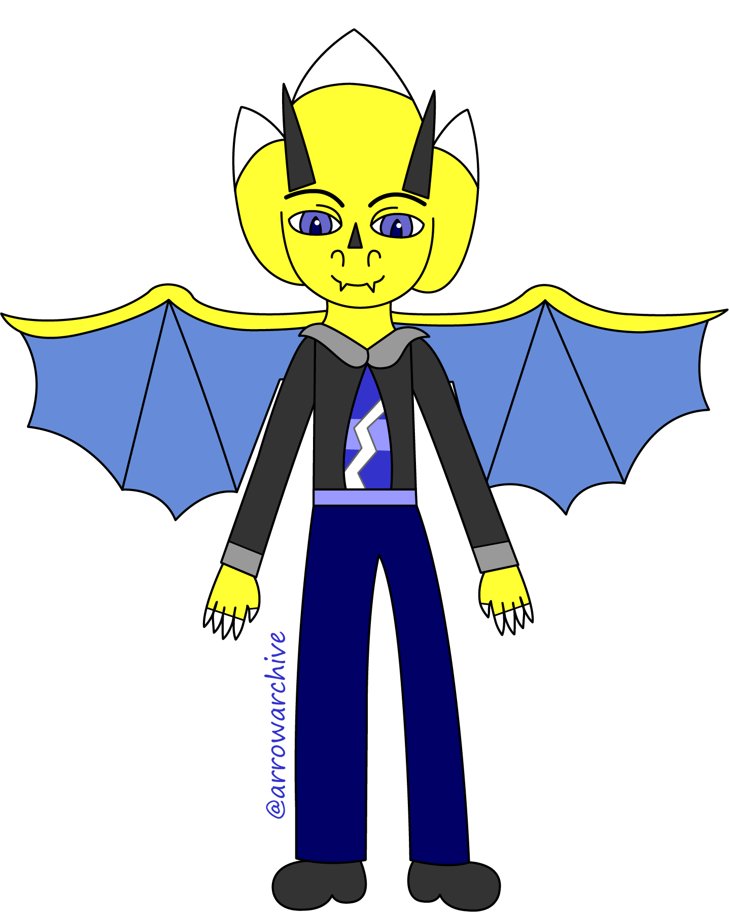
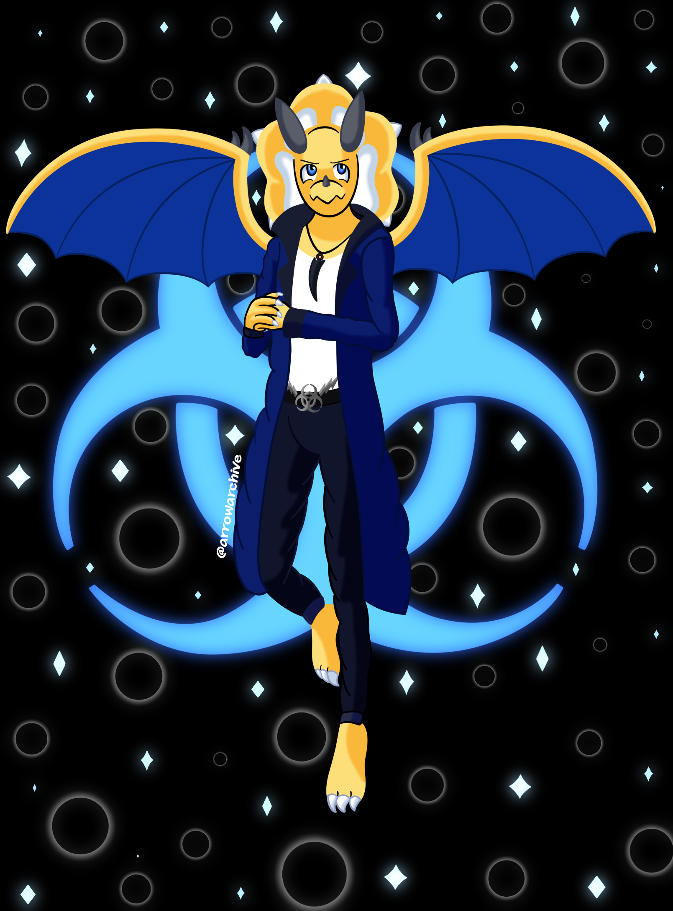
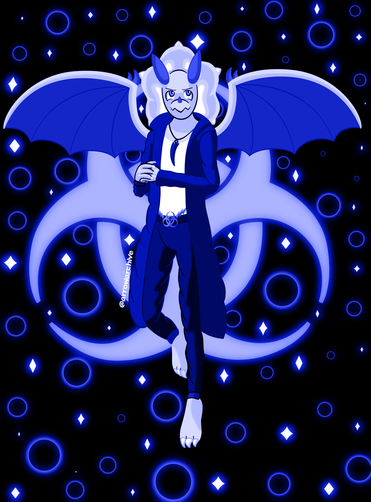
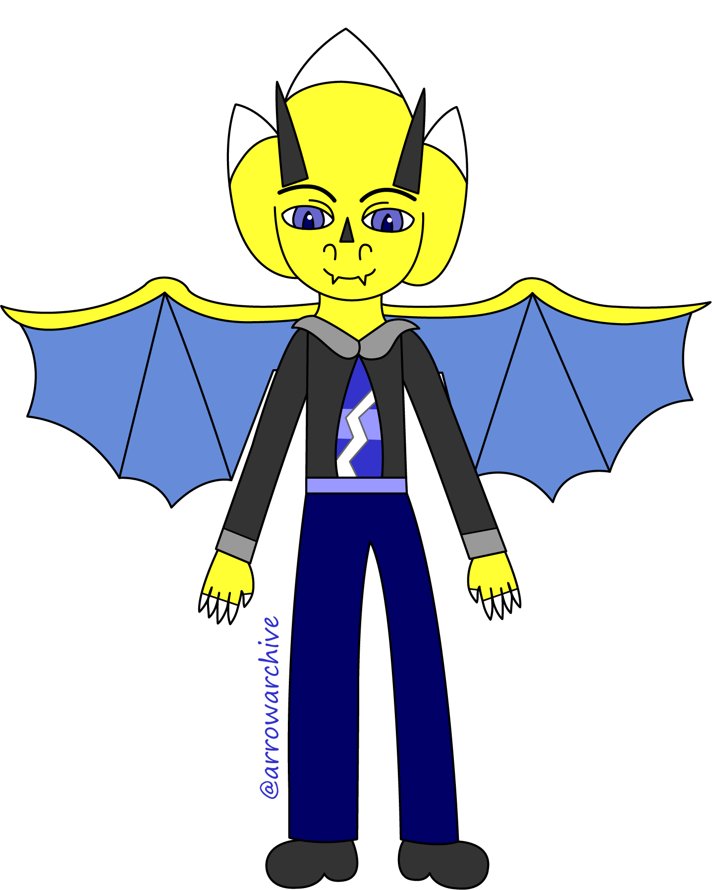
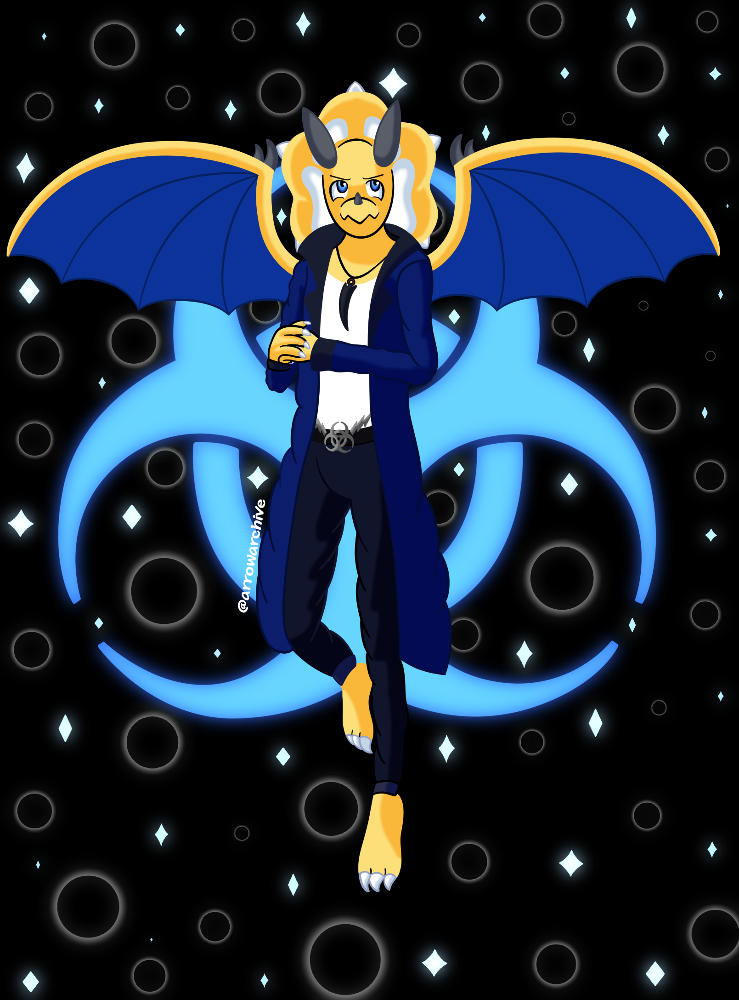
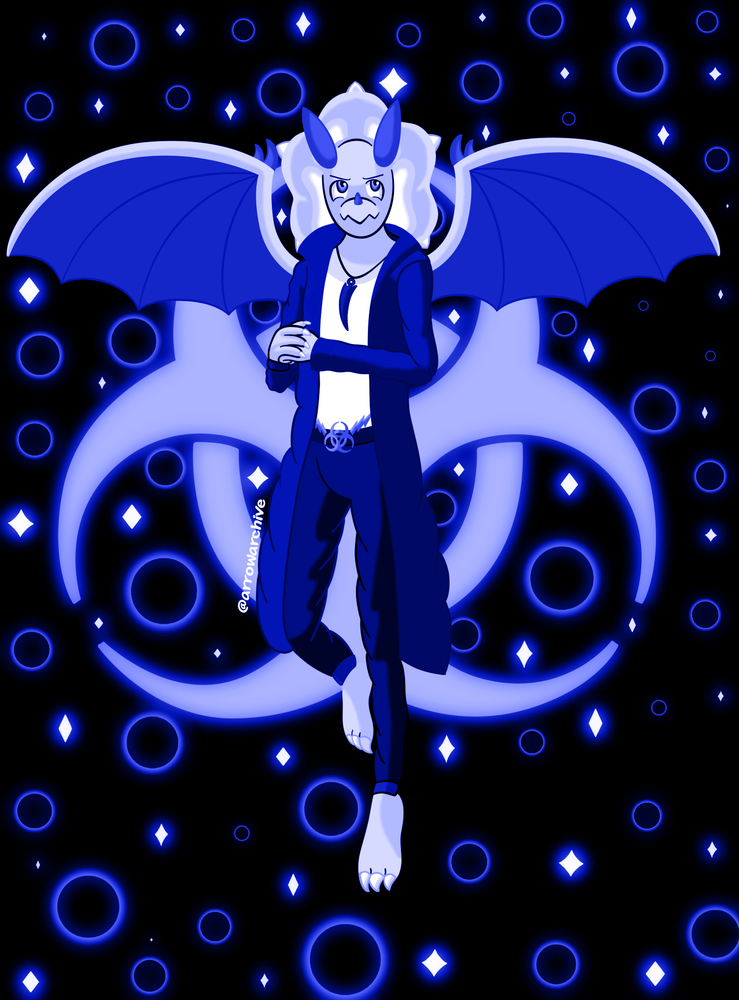

Introducing Voltox
 





Goodness, I am late with this one! I finished this drawing March 12th, but I didn't post the entry for it until the end of April. I was swamped with work and I didn't have a lot of time to work on a new gallery entry. I haven't had time to work on any new drawings either.
Long story short, time management is hard. I plan to draw more when I have free time, and I intend to keep that promise. As for the drawing and Voltox himself? I have quite a bit to say about them. I mentioned that Vaitu was not the only character I had sketches for, and while I planned to draw someone else from the group she's in, my brain would not let me draw anyone else unless I drew her brother first.
The siblings share the biohazard motif and have similar glowing symbols, but I intended that. It felt right to give the siblings the same motif, especially with their powers being the same. Voltox has the same lightning powers as Vaitu, but his lightning is blue whereas hers is red. The main difference, aside from color, is that his lightning requires finesse but is more controlled, making him a threatening opponent after enough experience. While his claws are weaker, he makes up for it with a more venomous bite, and his fangs will make it hurt even more.
Another goal of mine with the piece was to have Voltox and Vaitu look like siblings, but not so similar that they looked like twins. I intended for their species to have sexual dimorphism, and I represented that by giving Voltox sharper teeth, longer/sharper horns, shorter claws, and an extra wing claw. He looks like he is part of a biker gang with his jacket, and that was another inspiration for his design. Before I wrap things up here, I want to explain his necklace.
There are two explanations for his necklace design: the first, and shorter of the two, is that my older brother collected shark-tooth necklaces when he was younger, and though I doubt he wears them anymore, I still remember the enthusiasm he had for them. The longer reason, in-universe, is that males of Voltox's species have longer horns, but unlike the females, if they break off, they don't grow back. Their horns will heal if cracked, but once they're gone, they're gone. Broken horns symbolize defeat, and he acquired the horn on his necklace when he was twelve, taking it from a thug that tried to attack Vaitu when she was six. Messing with her is NOT a good idea when he's around, as he's very protective of her.
So yeah, that's Voltox in a nutshell (kind of). I'm not good at summaries and I can't guarantee what my next drawing will be (or when I will finish it), but I hope you enjoy my insight on another forgotten character of mine, and I hope to make use of him in the future!